本文章將介紹註冊 github 來使用
什麼是 github
github 是透過git進行版本控制的軟體原始碼代管服務平台，github同時提供付費帳戶和免費帳戶，這兩種帳戶都可以建立公開或私有的代碼倉庫，但付費用戶支援更多功能
1. 註冊 github
連上 github 網站輸入使用者名稱、電子郵件信箱、密碼註冊 點我進入網站
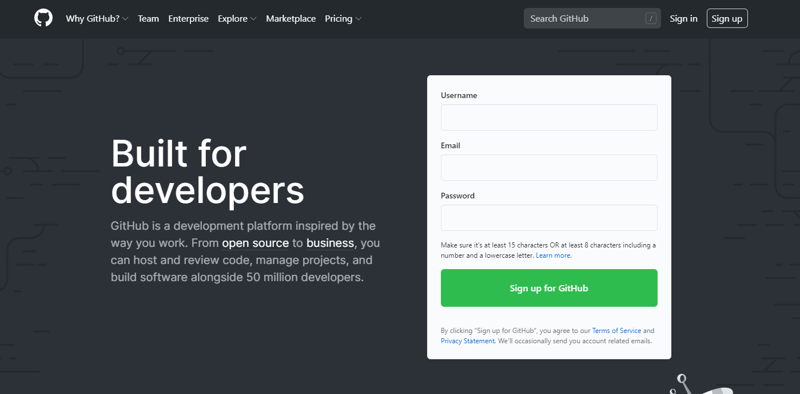
2. 驗證，然後點選 join a free plan
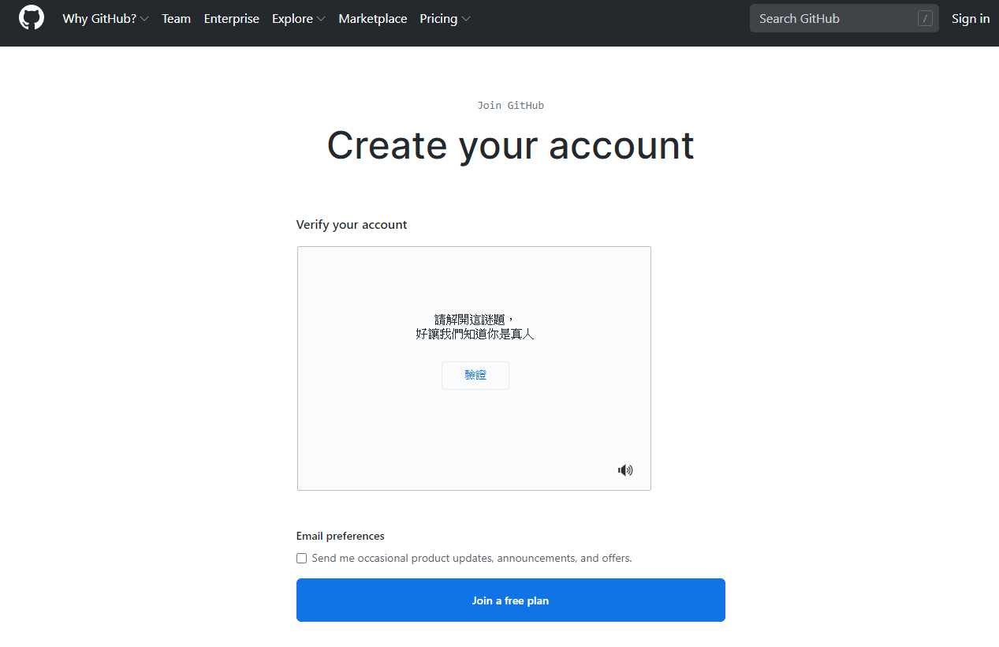
3. 問卷填寫
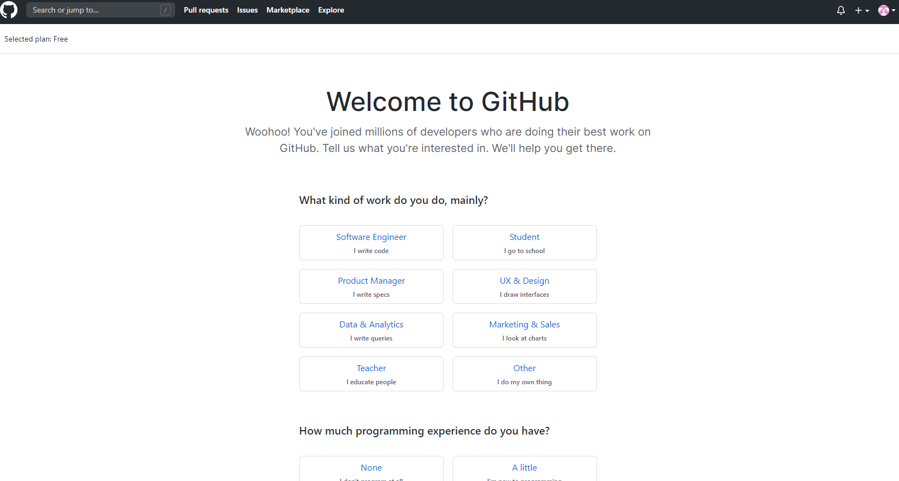
4. email 驗證
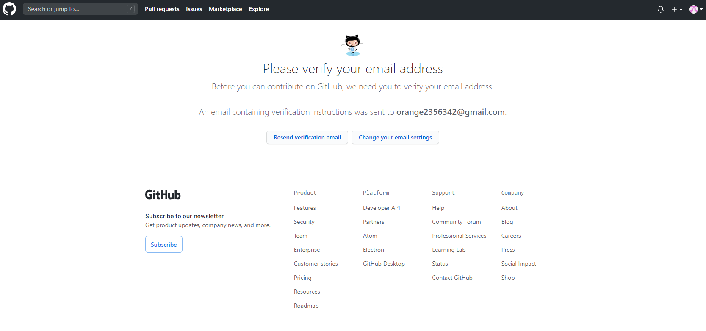
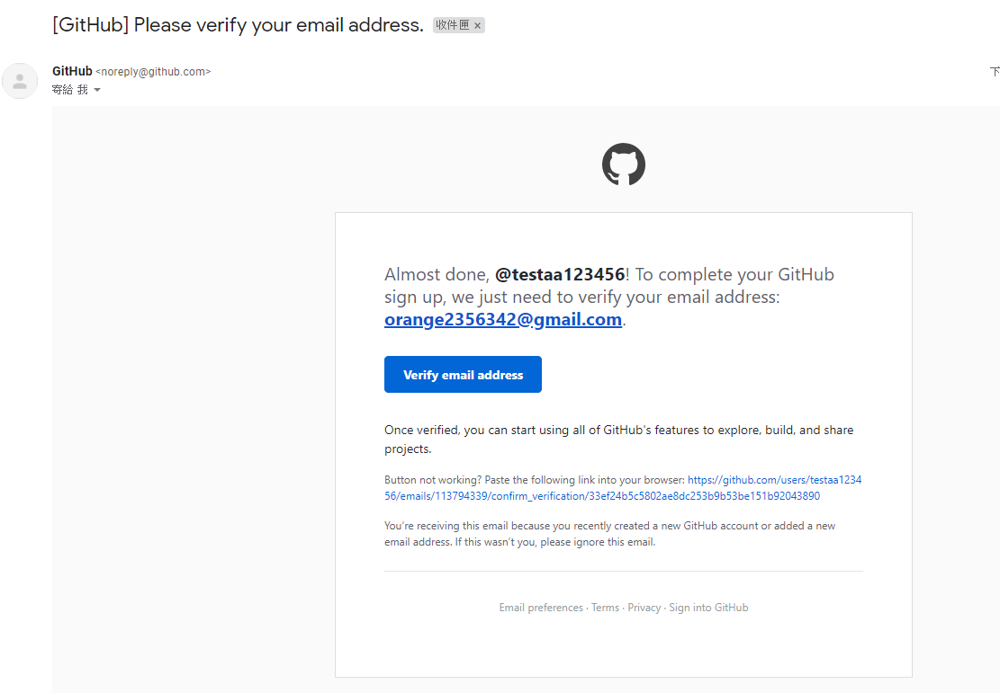
5. 驗證完後第一次畫面
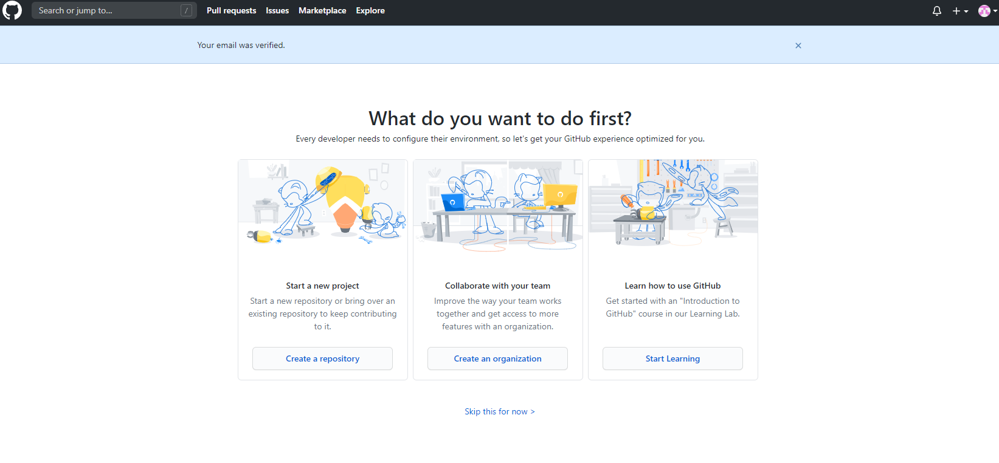
6. 可以再第一次畫面選擇 Create a repository 建立倉庫或是點選選左上角貓圖，左邊一樣會有建立庫選項
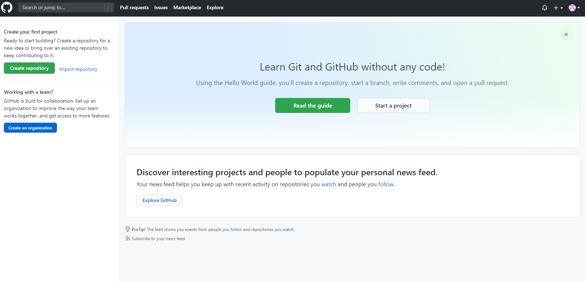
7. 建立倉庫畫面
Owner : 使用者名稱 ( 預設已經設定好了 )
Repository name : 名稱
Description : 倉庫的相關描述
Public、Private : 該倉庫的公開或隱私管理方案選項，如果是選擇 Private 的話，下方就會出現付費帳戶資料填寫項目
Initialize this repository with a README：README 就是這個程式庫工具內有很多的功能及使用方式的說明記錄，通常這個功能使用說明記錄都會被寫入一個 README.md 檔內
Add .gitgnore : GitHub的檔案管理功能，選擇建立的話，會產生出名為 .gitgnore 的隱藏檔，被寫在該檔案內的檔名不會加入版本管理，通常是寫入一些程式自動新增的管理檔案，或是包含帳號密碼的設定檔
Add a license : 檔案授權使用權限設定。這裡設定 None 的話，代表檔案不授權公開使用，別人來使用你的檔案必須要自行負責，如果設定的是 MIT License 的話，代表檔案可供別人使用於任何用途，甚至修改，其它的 License 選項都有著不同授權的概念，詳細說明可點選旁邊的「i」連進其各種 License 說明網頁
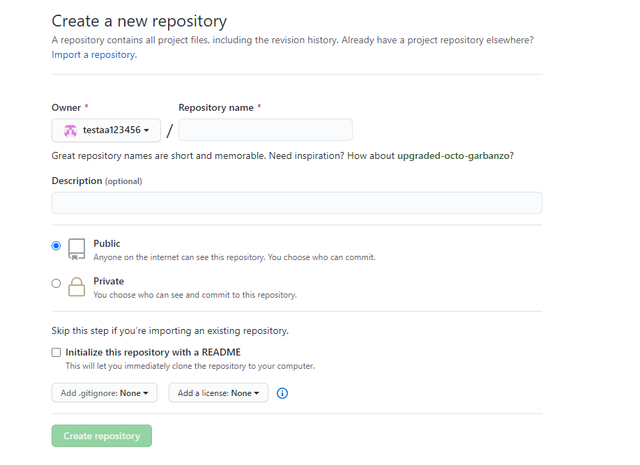
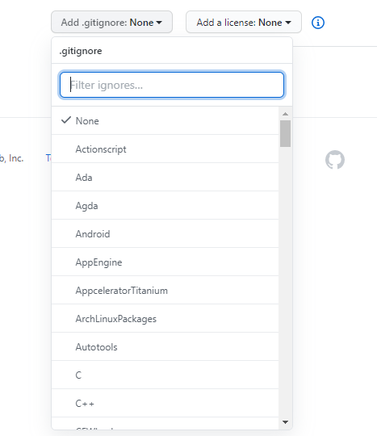
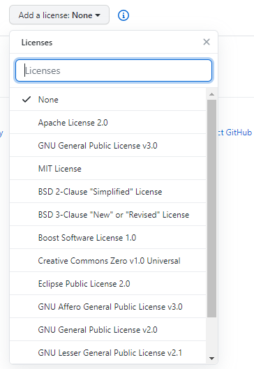
8. 開好倉庫的畫面，接下來就可以放上自己的程式碼了
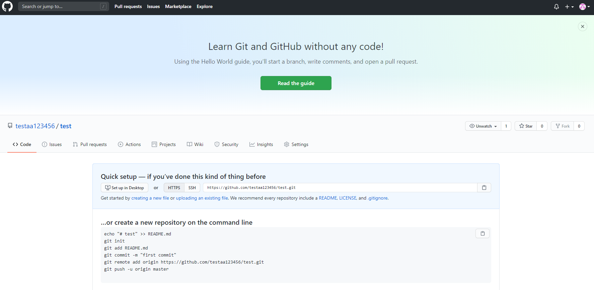